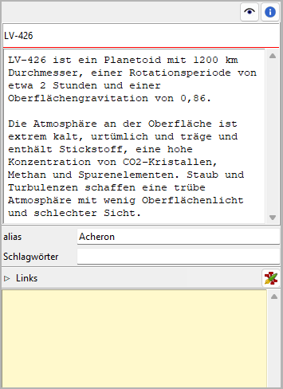

nv_zim
Benutzerhandbuch
Diese Seite gilt für die neueste Ausgabe von nv_zim. Sie können sie mit Hilfe > Zim-Anbindung Online-Hilfe öffnen.
nv_zim ist ein Plugin, das novelibre-Projekte mit einem Zim Desktop Wiki verbindet. Das ist hauptsächlich für die Dokumentation des Weltenbaus gedacht.
Das Plugin fügt dem novelibre-Extras-Menü
den Eintrag Zim Desktop Wiki hinzu,
und dem Hilfe-Menü den Eintrag Zim-Anbindung Online-Hilfe.
Die Eigenschaftsansicht von Figuren, Schauplätzen, Gegenständen und Buch
erhalten eine  -Schaltfläche.
Die Werkzeugleiste erhält eine Schaltfläche.
-Schaltfläche.
Die Werkzeugleiste erhält eine Schaltfläche.
Zim Desktop Wiki einrichten
Damit nv_zim das Zim Desktop Wiki-Anwendungsprogramm starten kann, muss es den Speicherort der Installation kennen. Wenn Sie Zim im standardmäßigen Verzeichnis installiert haben, gibt es hier nichts zu tun.
Bemerkung
Beim Programmhochlauf prüft nv_zim die launchers.ini-Datei im novelibre-Konfigurationsverzeichnis. Hier ein Beispiel mit einem Eintrag unter Windows:
[SETTINGS]
.zim = C:/Program Files (x86)/Zim Desktop Wiki/zim.exe
Falls diese Datei nicht existiert, oder der eingetragene Dateipfad nicht passt,
durchsucht das Programm die Standard-Installationspfade für die 32-Bit und die
64-Bit-Versionen unter Windows, sowie /usr/bin/zim unter Linux.
Wenn das missglückt, öffnet es einen Dateiauswahldialog und fragt nach dem Speicherort.
Der korrekte Speicherort wird dann automatisch in die launchers.ini-Datei eingetragen.
Zim-Notizbücher als Projekt-Wikis
Das nv_zim-Plugin erweitert die novelibre-Benutzeroberfläche, damit Sie bequem die Zim Desktop Wiki-Anwendung mit einem projektbezogenen Notizbuch oder mit einer kontextbezogenen Wiki-Seite öffnen können. Das funktioniert grundsätzlich mit jedem Zim-Notizbuch, auch mit Seiten in unterschiedlichen Notizbüchern. Es wird jedoch empfohlen, ein Projekt-Wiki genanntes Notizbuch anzulegen, das mit dem aktuellen novelibre-Projekt, oder auch mit mehreren Projekten einer Serie verlinkt wird. Dann kann das Programm fehlende Seiten automatisch in diesem Notizbuch anlegen.
Dateispeicherorte
Projekt-Wikis können an beliebigen Speicherorten liegen; wird eines jedoch automatisch
erzeugt, liegt es im novelibre-Projektverzeichnis in einem Unterverzeichnis namens
<Projektbezeichnung>_zim.
Wenn Sie das Projekt-Wiki nachträglich an einen anderen Ort verschieben, können Sie es beim nächsten Öffnen aus novelibre heraus mit einem Dateiauswahldialog auswählen und somit neu verlinken.
Wenn Sie das Projekt-Wiki zusammen mit dem novelibre-Projekt an einen anderen Ort verschieben, kann das Programm die Wiki-Links automatisch korrigieren.
Auch wenn Sie das Projekt-Wiki an seinem Ort lassen, aber das novelibre-Projekt woandershin verschieben, kann das Programm die Wiki-Links automatisch korrigieren.
Notizbuchstruktur
Automatisch angelegte Projekt-Wikis haben eine „flache“ Struktur, das heißt: alle Wiki-Seiten liegen im Home-Ordner des Zim-Notizbuchs. Gruppierungen und Baumstrukturen kann man dabei mit Hilfe von Links auf entsprechend strukturierten Übersichtsseiten anlegen. Gegenüber einer Ordnerstruktur hat das den Vorteil, dass sich jede Seite unter mehreren unterschiedlichen Gesichtspunkten einordnen lässt. Wenn Sie stattdessen eine hierarchische Struktur bevorzugen, können Sie automatisch erzeuge Wiki-Seiten nachträglich in Zim verschieben, müssen aber unter Umständen den Link in novelibre per Auswahldialog erneuern.
Schlagwörter
novelibre bietet die Möglichkeit, Figuren, Schauplätze und Gegenstände mit Schlagwörtern zu versehen. Wenn nv_zim automatisch eine Wiki-Seite erzeugt, fügt es vorhandene Schlagwörter in der geeigneten Notation für Zim ein. Daturch ist es der Anwendung möglich, solche Seiten nach den Kategorien zu gruppieren und zu verlinken, die durch die Schlagwörter repräsentiert werden.
Wiki-Links in novelibre
novelibre speichert die Dateipfade des Pojekt-Wikis und der Wiki-Seiten in der .novx-Datei ab, wenn das Projekt zum Zeitpunkt der Verlinkung nicht gesperrt ist. Andernfalls merkt sich das Programm diese Dateipfade nur für die aktuelle Sitzung, um das gesperrte Projekt nicht zu verändern. Wenn Sie aber das Pojekt nachträglich entsperren, und das Wiki oder eine Seite erneut öffnen, wird novelibre die Dateipfade automatisch speichern und eine entsprechende Meldung in der Statuszeile anzeigen.
Tipp
Falls Sie mehr als nur eine Wiki-Seite mit einer Figur, einem Schauplatz, einem Gegenstand oder dem ganzen Buch verlinken wollen, können Sie dafür reguläre Links verwenden. Wenn das nv_zim-Plugin installiert ist, wird novelibre Wiki-Seiten unter den Links erkennen und mit der Zim-Anwendung öffnen.
Zim Desktop Wiki-Menü
Projekt-Wiki öffnen
Mit Extras > Zim Desktop Wiki > Projekt-Wiki öffnen
oder mit der Schaltfläche in der Werkzeugleiste können Sie das mit dem Projekt
verlinkte Zim-Notizbuch öffnen.
Falls noch keines verlinkt ist, oder wenn die gespeicherte Link-Adresse nicht gültig ist, werden Sie gefragt, ob Sie ein bestehendes Wiki öffnen, oder ob Sie ein neues erzeugen wollen:
- Durchsuchen
öffnet einen Dateiauswahldialog, mit den Sie nach einer Zim-Wiki-Datei mit der Dateiendung .zim suchen können. Zim wird mit dem ausgewählten Projekt-Notizbuch gstartet.
Bemerkung
Die ausgewählte Datei wird als Projekt-Wiki verlinkt, falls das Projekt nicht gesperrt ist. Ist das Projekt gesperrt, können Sie das Projekt-Wiki im Verlauf der Sitzung aus novelibre heraus öffnen, müssen es aber unter Umständen bei der nächsten Sitzung erneut auswählen.
- Erzeugen
legt ein neues leeres Zim-Notizbuch in einem Unterverzeichnis des Projektverzeichnisses an und öffnet es mit Zim.
Bemerkung
Die neue .zim-Datei wird als Projekt-Wiki verlinkt, falls das Projekt nicht gesperrt ist. Ist das Projekt gesperrt, können Sie das Projekt-Wiki im Verlauf der Sitzung aus novelibre heraus öffnen, müssen es aber unter Umständen bei der nächsten Sitzung erneut auswählen.
- Abbrechen
bricht die Aktion ab, ohne Zim zu starten.
Hinweis
Wenn Sie das Projekt-Wiki oder eine Wiki-Seite aus novelibre heraus öffnen wollen, aber keine Reaktion sehen, schauen Sie bitte in der Taskleiste nach, ob die Zim Desktop Wiki-Anwendung bereits offen ist, aber von anderen Fenstern wie z.B. von novelibre verdeckt wird. In diesem Fall wird das Zim-Fenster nicht automatisch in den Vordergrund gehoben.
Projekt-Wiki erzeugen
Mit Extras > Zim Desktop Wiki > Projekt-Wiki erzeugen legen Sie ein neues Zim-Notizbuch in einem Unterverzeichnis des Projektverzeichnisses an und öffnen es mit Zim. Das erzeugte Projekt-Wiki umfasst Seiten für das Buch und für alle Figuren, Schauplätze und Gegenstände. Gibt es bereits ein Zim-Notizbuch im Zielverzeichnis, so wird dieses Verzeichnis automatisch umbenannt und bleibt als Sicherungskopie erhalten.
Bemerkung
Die neue .zim-Datei wird als Projekt-Wiki verlinkt, falls das Projekt nicht gesperrt ist. Ist das Projekt gesperrt, können Sie das Projekt-Wiki im Verlauf der Sitzung aus novelibre heraus öffnen, müssen es aber unter Umständen bei der nächsten Sitzung erneut auswählen.
Wiki-Links entfernen
Mit Extras > Zim Desktop Wiki > Wiki-Links entfernen können Sie gespeicherte Wiki-Links aus der Projektdatei entfernen. Das wird beim nächsten Speichern wirksam.
Ein Untermenü bietet zwei Möglichkeiten an:
- Ausgewählte Seiten
Damit werden die Zim Wiki-Links der ausgewählten Elemente entfernt. Dieses Kommando bezieht sich nur auf verlinkte Seiten, nicht aber auf das Projekt-Wiki.
- Alle
Damit werden alle Zim Wiki-Links entfernt. Dieses Kommando bezieht sich sowohl auf verlinkte Seiten, als auch auf das Projekt-Wiki.
Buch/Figuren/Schauplätze/Gegenstände-Eigenschaften
 Wiki-Seite-Schaltfläche
Eine Wiki-Seite öffnen/erzeugen
Mit Klick auf die Wiki-Seite-Schaltfläche öffnen Sie eine verlinkte Wiki-Seite mit Zim.
Ist noch keine Wiki-Seite verlinkt, versucht das Programm zunächst, im Projekt-Wiki eine Seite zu finden, deren Name zum Titel des Buchs, des Schauplatzes oder des Gegenstands passt, oder auf den vollständigen Namen der Figur, sofern bekannt, ansonsten den Kurznamen. Wenn eine passende Seite gefunden wird, erstellt das Programm einen Link und öffnet diese Seite nach einer entsprechenden Nachfrage.
Ist noch kein Projekt-Wiki definiert, fragt das Programm zunächst nach dem Projekt-Wiki und gibt Ihnen die Möglichkeit es auszuwählen oder zu erzeugen (siehe oben). Anschließend werden Sie gefragt, ob Sie eine bestehende Wiki-Seite öffnen oder eine neue erzeugen wollen:
- Durchsuchen
öffnet einen Dateiauswahldialog, mit den Sie nach einer Zim-Seite mit der Dateiendung .txt suchen können. Zim wird mit der gewählten Seite gestartet.
Bemerkung
Die ausgewählte Datei wird mit dem in novelibre aktuell gewählten Element verlinkt, falls das Projekt nicht gesperrt ist. Ist das Projekt gesperrt, können Sie die Wiki-Seite im Verlauf der Sitzung aus novelibre heraus öffnen, müssen sie aber unter Umständen bei der nächsten Sitzung erneut auswählen.
- Erzeugen
legt eine neue Wiki-Seite als Bestandteil des Projekt-Wikis an und öffnet es mit Zim.
Bemerkung
Die neue .txt-Datei wird als Wiki-Seite mit dem in novelibre aktuell gewählten Element verlinkt, falls das Projekt nicht gesperrt ist. Ist das Projekt gesperrt, können Sie die Wiki-Seite im Verlauf der Sitzung aus novelibre heraus öffnen, müssen sie aber unter Umständen bei der nächsten Sitzung auswählen.
- Abbrechen
bricht die Aktion ab, ohne Zim zu starten.
Einen Wiki-Seiten-Link entfernen
Durch Klicken auf die Wiki-Seite-Schaltfläche bei gedrückter Alt-Taste
wird der Link nach Bestätigung entfernt.